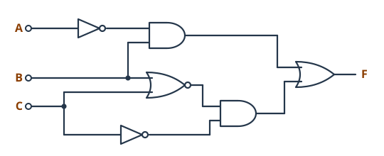
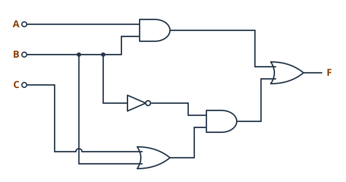
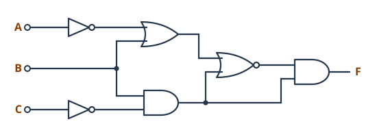
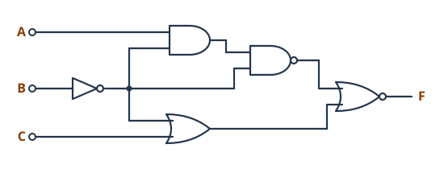
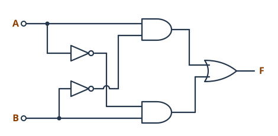
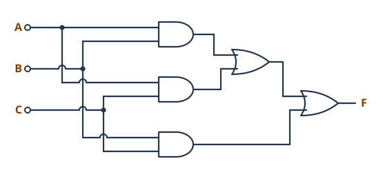

0221 · Montaje y mantenimiento de equipo · Tema 2 (UT2) · Ejercicios
Ejercicios — Estructura funcional del ordenador y buses
Mapa de boletines
- Boletín 1 · RepresentaciónBits, binario, hexadecimal y unidades · 10 ejercicios
- Boletín 2 · Circuitos lógicosExpresión y tabla de verdad · 7 ejercicios
- Boletín 3 · Arquitectura y busesBloques, Von Neumann y cálculos de buses · 9 ejercicios
- Boletín 4 · Ejecución de programasSimula la CPU instrucción a instrucción · 6 programas
Boletín 1 · Representación de la información
Repasa los apartados 2.1 y 2.2 de la teoría.
1.1 ¿Qué unidades de información existen mayores que el exabyte? Indica también su nombre en el sistema binario (IEC).
1.2 ¿Para qué se utilizan las unidades word, dword y qword? Busca dónde aparecen DWORD y QWORD en el Editor del Registro de Windows (regedit) y explica qué tipo de valor guardan.
1.3 ¿Cuántos bits necesitas, como mínimo, para representar cada una de estas cosas? Justifica cada respuesta con 2n.
- Los días de la semana.
- Los meses del año.
- Los 30 alumnos de una clase.
- 256 colores distintos.
- 1000 números de matrícula distintos.
1.4 Pasa a decimal: 10102, 1100 10002, 0111 11112 y 1 0000 00002.
1.5 Pasa a binario con 8 bits, por divisiones sucesivas: 13, 100, 255 y 170.
1.6 Pasa a hexadecimal: 1011 1110 1110 11112, 0001 11112 y 1100 1010 1111 11102. Después pasa a binario: 3A16, FF16 y 0x2C0.
1.7 En HTML los colores se escriben como #RRGGBB: dos cifras hexadecimales para el rojo, dos para el verde y dos para el azul. ¿Qué cantidad de cada color, en decimal (0–255), tiene #FF8000? ¿De qué color se trata?
1.8 Un bloque de memoria tiene 128 celdas de 1 byte. ¿Qué capacidad tiene un módulo formado por 32 bloques? Exprésala en bytes y en KiB.
1.9 Compras un disco de 500 GB y una memoria USB de 64 GB. ¿Qué capacidad mostrará Windows para cada uno? Explica por qué no coincide con la de la caja.
1.10 ¿Cuántos bytes ocupa la palabra «Hola» en ASCII? Busca el código de cada letra y escríbelo en decimal y en hexadecimal.
Boletín 2 · Circuitos lógicos
Para cada circuito: (a) escribe la expresión de la salida de cada puerta, (b) obtén la expresión de F y (c) haz la tabla de verdad completa, con columnas intermedias. Sigue el método del ejemplo resuelto de la teoría. Recuerda: un punto une cables; un cruce con salto, no.
Si algún resultado te parece extraño, no lo cambies sin más: repasa el circuito puerta a puerta. Puede que sea correcto.
2.1 Circuito lógico 1


2.2 Circuito lógico 2


2.3 Circuito lógico 3


2.4 Circuito lógico 4


2.5 Circuito lógico 5


Solo tiene dos entradas, así que la tabla tiene 4 filas. Compara el resultado con las puertas del laboratorio: ¿a cuál equivale este circuito?
2.6 Circuito lógico 6


Tres jueces pulsan un botón (1 = sí) y F enciende una luz. Explica con tus palabras cuándo se enciende.
2.7 Dibuja el circuito con puertas lógicas de la función F = A · B + C' y haz su tabla de verdad. Puedes dibujarlo a mano o en un simulador como Logisim o Tinkercad, que ya conoces del tema 1.
Boletín 3 · Arquitectura y buses
Repasa los apartados 2.4, 2.5 y 2.6. Para los cálculos puedes comprobar tus resultados con la calculadora de buses de la teoría, después de hacerlos a mano.
3.1 Explica qué tiene en común la arquitectura Harvard con la de Von Neumann y en qué se diferencian. ¿Por qué se usa Harvard en microcontroladores como el de Arduino y no en los PC?
3.2 Para cada unidad funcional de la arquitectura de Von Neumann, indica qué componente o componentes de un ordenador de sobremesa actual la forman.
3.3 Pon dos ejemplos de dispositivos actuales basados en la arquitectura de Von Neumann. ¿Cómo les afecta el cuello de botella de Von Neumann? ¿Qué se ha hecho para reducirlo?
3.4 ¿Qué es el overclocking? ¿Qué relación tiene con la unidad de control? ¿Qué riesgos tiene para el equipo?
3.5 Calcula la memoria máxima direccionable, con celdas de 1 byte, para un bus de direcciones de 16, 20, 32 y 36 líneas. Exprésala en la unidad IEC más adecuada.
3.6 ¿Cuántas líneas necesita como mínimo el bus de direcciones para direccionar 8 GiB con celdas de 1 byte?
3.7 Calcula el ancho de banda de un canal de memoria de 64 bits con módulos DDR4-2666 y con módulos DDR5-4800. ¿Cuánto sería con dos canales (dual channel)?
3.8 Indica por qué bus viaja cada una de estas informaciones: la dirección 1F4016; el código ASCII de la letra que se va a imprimir; la orden de escribir en memoria; el aviso del teclado de que se ha pulsado una tecla; los pulsos del reloj.
3.9 Los primeros PC usaban buses paralelos compartidos. Los actuales (PCI Express, SATA, USB) son buses serie punto a punto. Explica dos motivos de este cambio.
Boletín 4 · Ejecución de programas
Las siguientes tablas muestran programas guardados en memoria. Las instrucciones tienen formato operación-dirección y el juego de instrucciones es:
1 → Cargar el AC desde memoria
2 → Almacenar el AC en memoria
3 → Sumar al AC el dato de memoria
4 → Restar al AC el dato de memoria
5 → Multiplicar el AC por el dato de memoria
6 → Dividir el AC entre el dato de memoria
Para cada programa, simula su ejecución instrucción a instrucción. En cada paso indica los valores de los registros de la CPU implicados (CP, RI, RD, RM y AC) y explica qué sucede. Al final, indica qué valor queda en memoria. Cada programa empieza en la primera dirección de su tabla. Fíjate en el ejemplo resuelto de la teoría.
Cuando lo tengas en papel, escribe el programa en la «Memoria libre» del simulador y compara tu traza con la suya.
| 100 | 1300 |
|---|---|
| 101 | 3301 |
| 102 | 2301 |
| ⋮ | |
| 300 | 0016 |
| 301 | 0007 |
| 110 | 1302 |
|---|---|
| 111 | 4303 |
| 112 | 2303 |
| ⋮ | |
| 302 | 0013 |
| 303 | 0010 |
| 110 | 1304 |
|---|---|
| 111 | 5305 |
| 112 | 2305 |
| ⋮ | |
| 304 | 0025 |
| 305 | 0003 |
| 130 | 1309 |
|---|---|
| 131 | 6308 |
| 132 | 3307 |
| 133 | 4306 |
| 134 | 2309 |
| ⋮ | |
| 306 | 0003 |
| 307 | 0006 |
| 308 | 0002 |
| 309 | 0008 |
| 140 | 1310 |
|---|---|
| 141 | 3310 |
| 142 | 3313 |
| 143 | 4312 |
| 144 | 2312 |
| ⋮ | |
| 310 | 0005 |
| 311 | 0010 |
| 312 | 0015 |
| 313 | 0020 |
| 150 | 1317 |
|---|---|
| 151 | 5315 |
| 152 | 4316 |
| 153 | 5315 |
| 154 | 2314 |
| ⋮ | |
| 314 | 0001 |
| 315 | 0002 |
| 316 | 0003 |
| 317 | 0004 |